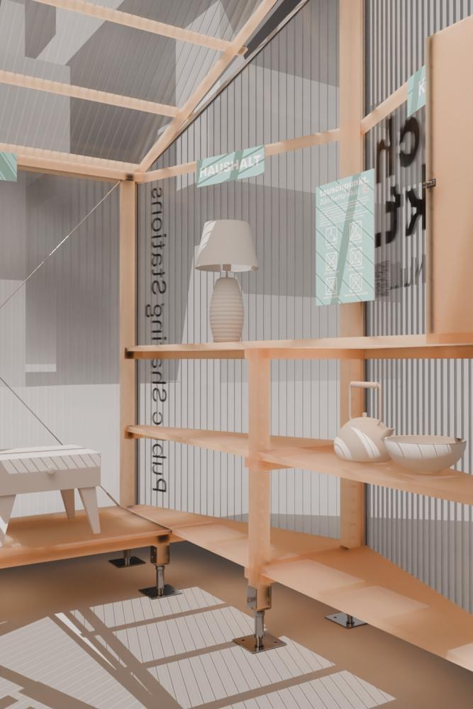

tauschpunkt.
Das Konzept.
„tauschpunkt.“ steht für einfache Tausch-Stationen im öffentlichen Raum, an denen gebrauchte Alltagsgegenstände gratis weitergegeben werden können. Die Idee baut auf der bestehenden Praxis von „Gratis“-Objekten auf der Strasse auf und entwickelt sie weiter – mit wettergeschützter, klar gestalteter und legaler Infrastruktur.
Ein Netzwerk solcher Stationen fördert Ressourcenschonung, Kreislaufwirtschaft und nachbarschaftlichen Austausch. Gleichzeitig entsteht ein offenes Sharing-System für die ganze Stadt, das nachhaltiges Handeln sichtbar und einfach macht.
Vision tauschpunkt
Eine Stadt, in der Teilen selbstverständlich ist: Öffentliche Tausch-Stationen machen es einfach, gebrauchte Dinge weiterzugeben statt wegzuwerfen – zugänglich für alle, mitten im Alltag.
So entsteht ein stadtweites Netzwerk, das Ressourcen schont, Abfall reduziert und Menschen verbindet. Aus spontanen Gesten wird eine gelebte Kultur des Teilens, die Nachbarschaften stärken und neue Begegnungen ermöglicht.
Die Vision ist ein Zürich, in dem Kreislaufdenken sichtbar und erlebbar wird – praktisch, sozial und nachhaltig.
Projekt Galerie


